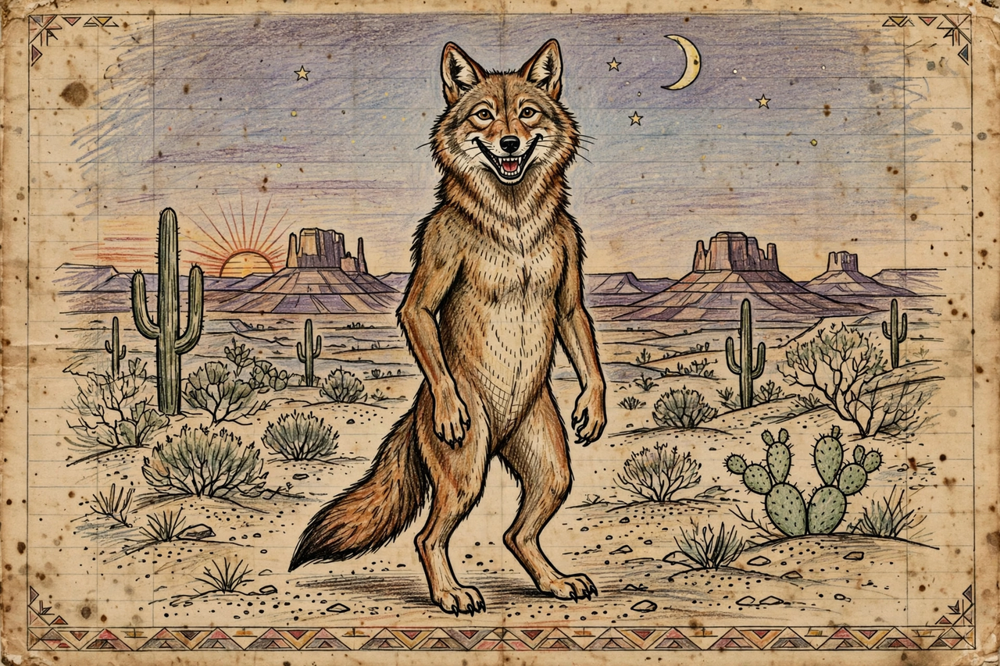

Trickster

In the study of mythology and folklore, a trickster is a character in a story — god, spirit, human or animal — who exhibits intellect and secret knowledge, and uses it to play tricks, disobey conventional rules and defy ordinary behaviour. The trickster openly questions, disrupts and mocks authority, and is typically male, fond of food, sex, pranks and shape-shifting.
Role in mythology
Tricksters frequently straddle creation and destruction: they may steal fire for humanity, shape the world, or found cultural customs, while their greed and folly also bring death, disease and disorder into it. Paul Radin, Karl Kerényi and Claude Lévi-Strauss all treated the figure as central to the structure of myth; Lewis Hyde's Trickster Makes This World (1998) portrays the trickster as a boundary-crosser essential to cultural renewal. In many traditions the trickster is also a culture hero, and the same tales that entertain children warn adults against selfishness.
Examples
Well-known tricksters include Coyote, Raven and Nanabozho in Native American mythology; Loki in Norse myth; Anansi the spider in West African and Caribbean tradition; Eshu in Yoruba religion; Sun Wukong, the Monkey King of Journey to the West; Reynard the Fox in medieval Europe; and Hermes and Prometheus in Greek myth. Modern descendants include Br'er Rabbit, Bugs Bunny and numerous comic-book and film characters.
See also: Native American mythology, Loki, Mythology